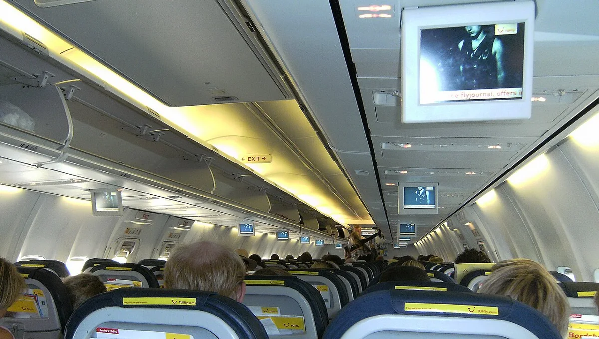
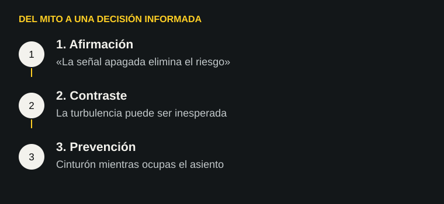
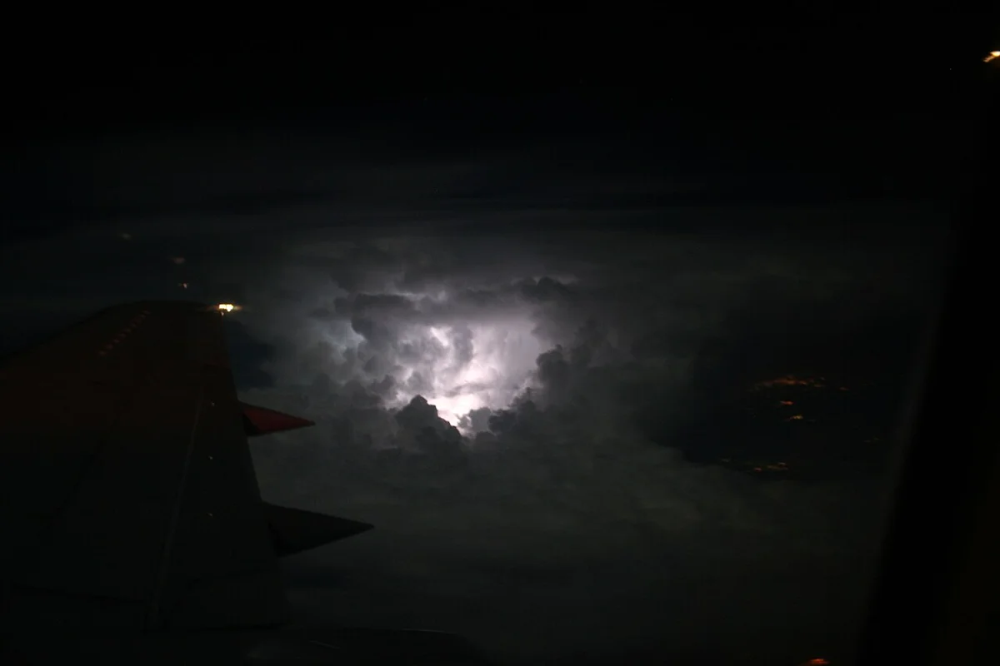
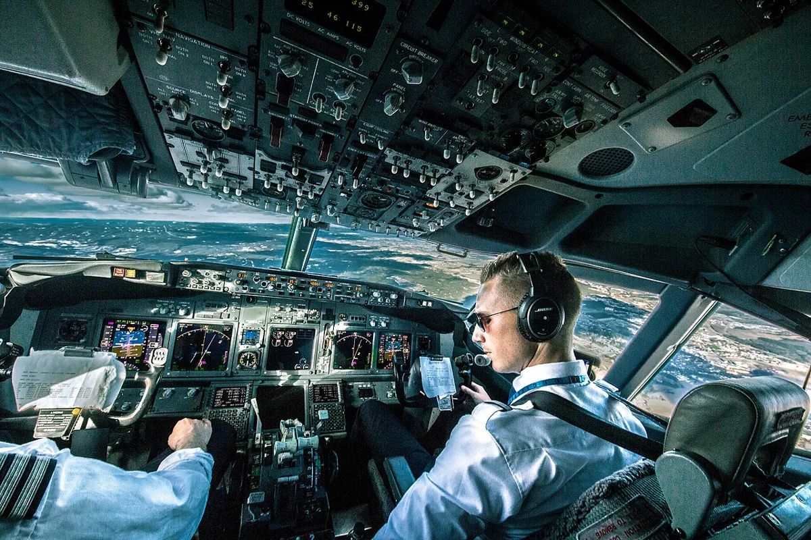
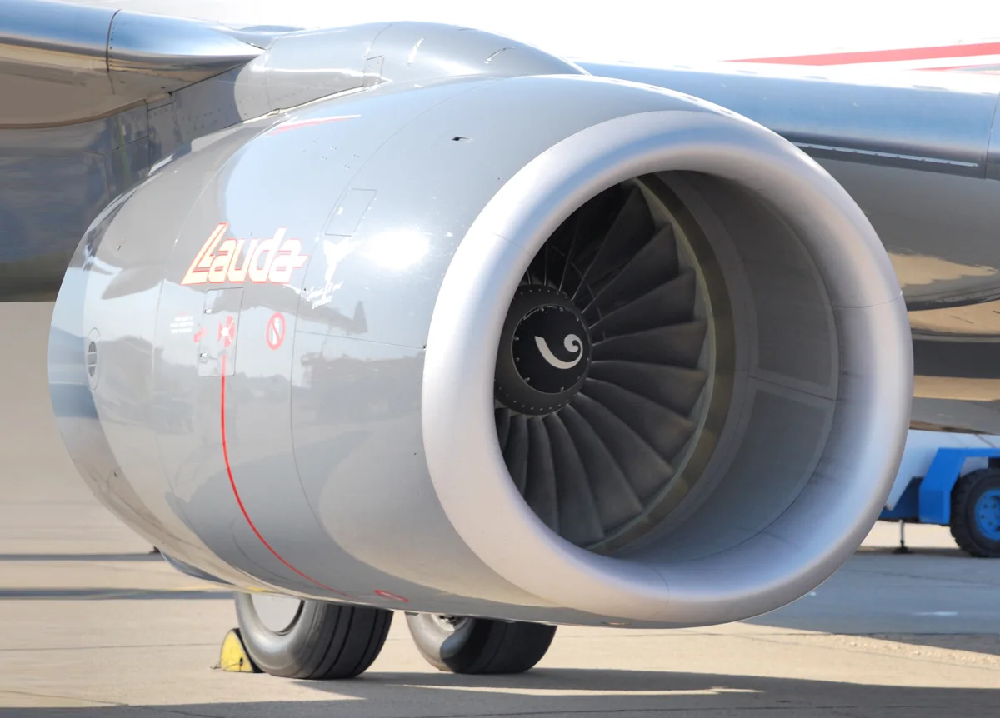
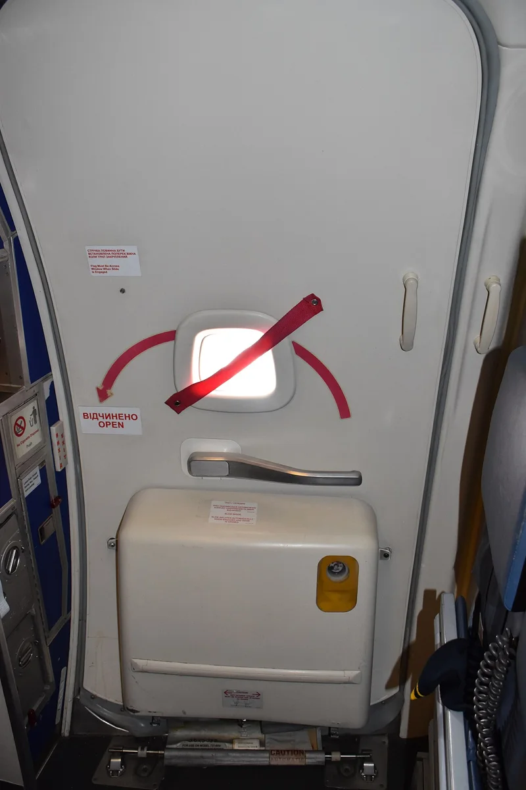
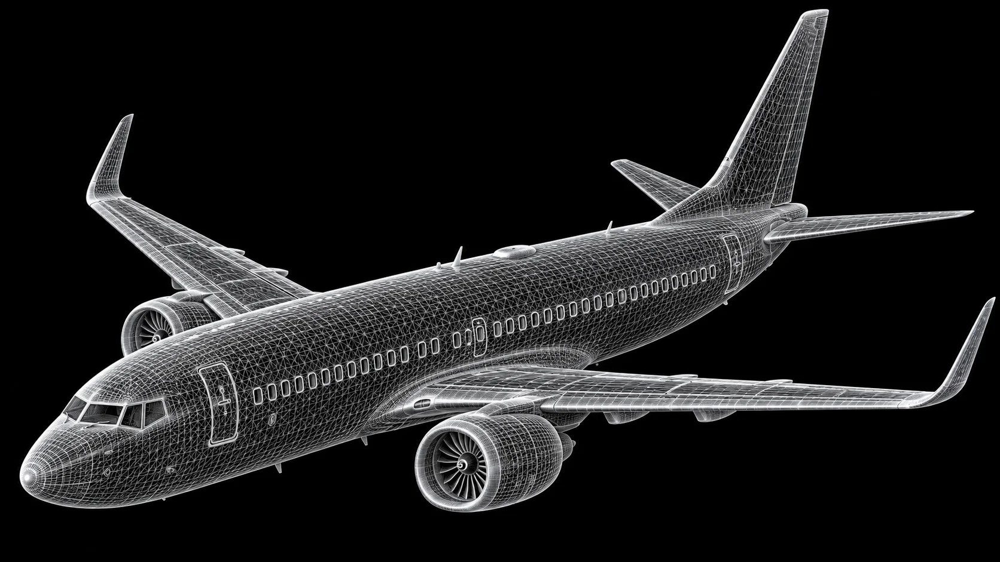

01 / Investigación y evidencia
Mitos y realidades de la seguridad aérea
Creencias comunes contrastadas con evidencia técnica y científica.


Un mito de seguridad aérea es, en este apartado, una afirmación difundida que simplifica o distorsiona el funcionamiento de la aviación. No se considera falsa una preocupación únicamente porque provoque miedo: primero debe compararse con evidencia. El análisis se concentra en cinco grupos de creencias sobre turbulencia y cinturones, rayos, automatización, fallas de motor y puertas presurizadas. Se examina qué parte es incorrecta, qué límites tiene la explicación y cómo se relaciona con la prevención.
Las turbulencias significan que el avión está a punto de caer

La turbulencia es una alteración del movimiento del aire que puede producir variaciones bruscas en el vuelo. Sentir movimientos fuertes no demuestra, por sí solo, que exista una caída inminente. La FAA (s. f.-c) la describe como una causa relevante de lesiones y señala que puede aparecer de forma inesperada. Por tanto, tampoco sería correcto reemplazar el miedo por la afirmación de que cualquier turbulencia carece de peligro.
El estudio de la NTSB (2021) muestra que su prevención requiere observaciones oportunas, información compartida y medidas para reducir lesiones. Sus hallazgos desplazan la atención hacia problemas operativos concretos: anticipar encuentros, comunicar el riesgo y proteger a quienes se encuentran en cabina. El análisis de este apartado es que la percepción de movimiento y la gravedad de las consecuencias deben evaluarse por separado; una experiencia incómoda no equivale automáticamente a una pérdida de control.
La investigación científica también permite contextualizar este peligro. Williams y Joshi (2013) analizaron, mediante simulaciones climáticas, la turbulencia en aire claro sobre el Atlántico Norte durante el invierno bajo un escenario de duplicación del dióxido de carbono. Obtuvieron aumentos proyectados en varios indicadores de intensidad y frecuencia. El resultado se limita al escenario y a la región estudiados: no demuestra que una turbulencia concreta vaya a causar un accidente ni permite calcular el riesgo de un vuelo individual. Su aportación es mostrar que la prevención debe considerar la evolución del entorno atmosférico, además de las capacidades de la aeronave.
Si la señal está apagada ya no necesito el cinturón
Esta idea confunde la indicación de la tripulación con la desaparición de toda posibilidad de turbulencia. La recomendación de la FAA (s. f.-c) es mantener el cinturón abrochado mientras se permanece sentado y obedecer las instrucciones de la tripulación. La medida tiene sentido porque un cambio inesperado de movimiento puede afectar a una persona antes de que logre reaccionar.
El contraste permite distinguir entre una señal que organiza la conducta de los ocupantes y una garantía de condiciones constantes. Como interpretación preventiva, mantener el cinturón ajustado mientras se ocupa el asiento es una acción sencilla compatible con la incertidumbre del entorno. Esta conclusión no implica permanecer sentado durante todo el vuelo, sino conservar la protección disponible cuando se está en el asiento. La seguridad también depende de la participación informada del pasajero.
Un rayo provoca necesariamente un accidente

Airbus (2023b) explica que sus aeronaves incorporan medidas de diseño para limitar los efectos de los rayos, así como procedimientos y precauciones para la operación y el mantenimiento. La estructura y las protecciones de los sistemas forman parte de una respuesta técnica ante este fenómeno. En consecuencia, un impacto no demuestra por sí mismo que la aeronave vaya a sufrir un accidente.
La existencia de esas protecciones tampoco autoriza a afirmar que un rayo nunca causa daños. El mismo fabricante indica qué acciones deben realizarse después de un impacto y recuerda la importancia de evitar condiciones peligrosas. La interpretación es que diseño, procedimientos e inspección se complementan: la protección técnica limita consecuencias, mientras la revisión permite detectar afectaciones. Este ejemplo ayuda a comprender por qué una inspección posterior es una medida de prevención y no prueba automática de una catástrofe cercana.
El piloto automático hace todo y los pilotos no intervienen

El piloto automático ejecuta funciones dentro de capacidades y modos determinados; su uso exige comprender su interacción con otros sistemas. La FAA (2016) señala que ningún nivel de automatización resulta adecuado para todas las situaciones de vuelo y que el piloto debe gestionar correctamente la navegación y el piloto automático. La automatización, por ello, no equivale a una operación libre de supervisión o de decisiones humanas.
Un ejemplo documentado por Airbus (2023a) corresponde a activaciones involuntarias del piloto automático al intentar seleccionar el control automático de empuje durante la carrera de despegue del A220. La publicación relaciona estos eventos con riesgos concretos y describe medidas para prevenir su repetición. El caso no representa a todos los vuelos ni permite concluir que la automatización sea perjudicial en general; demuestra que su seguridad también depende del diseño de la interfaz, los procedimientos y la actuación de la tripulación.
La aportación del análisis consiste en reconocer una relación de cooperación: el sistema puede ejecutar tareas con precisión, pero la tripulación debe interpretar su comportamiento y seleccionar su uso. Esta interacción se desarrolla en el apartado sobre factor humano y sistemas aeronáuticos.
Si falla un motor el avión cae inmediatamente

La pérdida de un motor es una situación seria, pero no equivale necesariamente a una caída inmediata. Las limitaciones de operación para aviones de transporte con motores de turbina incluyen condiciones de desempeño en ruta con un motor inoperativo; por tanto, la planificación contempla esa contingencia dentro de supuestos y límites específicos (14 C.F.R. § 121.191, 2026). Esta referencia estadounidense no debe presentarse como una descripción universal de cualquier aeronave.
La NTSB (s. f.-b) advierte que mantener el control con un motor inoperativo exige preparación y que una habilitación multimotor, por sí sola, no elimina el riesgo. La fase del vuelo y la respuesta del piloto importan. El contraste entre ambas fuentes permite reconocer que capacidad técnica y ejecución operacional son elementos diferentes: disponer de un motor adicional no asegura un resultado favorable en cualquier condición. La explicación correcta debe evitar tanto la fatalidad automática como la promesa de que toda falla resulta fácil de resolver.
Una puerta puede abrirse en crucero igual que en tierra

Esta afirmación ignora la diferencia entre la presión interior y exterior y los mecanismos de cierre. La FAA (2005) explica los criterios de seguridad estructural y funcional de las puertas del fuselaje. La protección no depende únicamente de la presión: también intervienen los seguros y los mecanismos que evitan una apertura inadvertida. Por eso no conviene afirmar que cualquier puerta es imposible de abrir durante cualquier fase del vuelo. La explicación depende del diseño, la presurización y las condiciones operativas. Para el pasajero, la conducta adecuada es seguir las instrucciones de la tripulación y no manipular las salidas.
Síntesis del subtema
Los cinco casos muestran que las afirmaciones absolutas omiten condiciones esenciales. La evidencia permite explicar protecciones y medidas preventivas, pero también sus límites. Como aportación de este análisis, comunicar seguridad exige mencionar la amenaza, la protección disponible y la conducta necesaria para aprovecharla. Esa forma de presentar la información puede emplearse después en el blog para informar sin exagerar ni minimizar los riesgos. Los registros y otros recursos de investigación estudiados en el siguiente apartado permiten comprender cómo se comprueban los hechos de un suceso.
Las citas de este artículo se desarrollan en la bibliografía completa.
Exploración interactiva · Mitos y realidades
Explora los mitos en un Boeing 737
Pasa el cursor o toca los cinco puntos: turbulencia, motores, rayos, puertas y piloto automático. Cada punto abre una imagen, una explicación y sus fuentes. Las explicaciones se presentan aquí mismo, con controles para explorarlas y cerrar cada tarjeta.
Boeing 737-800 · Mitos y realidades
Lo que parece. Lo que sabemos.
Pasa el cursor por un punto, tócalo o elige un tema. La tarjeta permanece abierta para que puedas leerla.

Ilustración conceptual: no es un plano técnico ni representa procedimientos operativos. Los puntos son zonas temáticas; los créditos de las imágenes de apoyo aparecen en cada tarjeta.
Ilustración conceptual del 737-800; no es un plano técnico. Las fotografías contextuales y los esquemas de cada tarjeta tienen sus créditos dentro del recurso. Abrir en una ventana independiente.
La exploración de esta página se ejecuta en tu navegador y no envía respuestas. La versión de Genially se abre en un servicio externo sujeto a las políticas de privacidad.